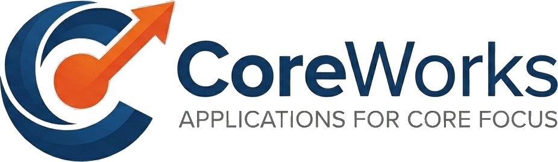

相談するCoreWorks は、毎日くり返される
“本質的でない作業”を見つけ出し、
課題にちょうど合った仕組みで消していく会社です。
空いた時間を、あなたが
本質的な（コアとなる）仕事に集中するために。
アプリと聞くとスマホやパソコンの画面を思い浮かべるかもしれません。CoreWorks では、お客様の課題をひとつ解決するなら、自動化・段取り・テンプレートも含めて、その仕組みすべてを“アプリ”と呼びます。手段からではなく、あなたの「困りごと」から始めます。無駄を消すのは、あなたが本質的な（コアな）仕事に集中するためです。
思いつきで作りません。あなたの現場をよく見ることから始めます。
あなたの一日の作業に入り込み、くり返している手間・転記・確認を一緒に洗い出します。
「これは本来やらなくていい」という作業を、痛みの大きさと頻度で見極めます。
説明なしで使える、いちばんシンプルな仕組みを作って、その無駄だけを確実になくします。
どれも特別な機材や難しい操作は不要。現場の人が、その日から使えるものばかりです。
スマホの工事写真を選んで並べるだけで、表紙つきの写真帳PDFが完成。そのままメールで送付できます。事務所に戻って写真をExcelに貼り付け、PDFにする作業がまるごと不要に。
取引先ごとのサイトに毎回ログインして請求書・納品書を集める作業を、パソコンが自動で代行。自動実行の仕組みをいかし30以上のサイトから自動保存、なにもしなくても必要なファイルがフォルダのなかに。
掲示板での予定共有とExcelでの実績入力を、スマホひとつに統合。予定はカレンダーへ、実績は自動集計へ。「誰が未入力か」も一目で分かります。
良い商品やサービスがあるのに、伝わっていない——その“伝える仕事”を、一枚のページが引き受けます。販促はLPにまかせて、あなたは本業に集中。写真と想いをいただき、伝わる一枚に仕上げます。
ひとつでも当てはまれば、CoreWorks がお役に立てるかもしれません。
どんな小さな作業でも構いません。まずは困りごとをお聞かせください。本当に仕組みで解けるかを、一緒に見極めます。ご相談は無料です。
メールで相談する